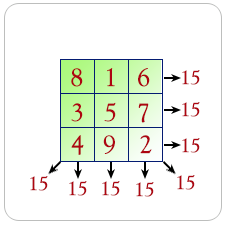

1. Write a
Python program to convert degree to radian.
Note : The radian is the standard unit of angular measure, used in many areas
of mathematics. An angle's measurement in radians is numerically equal to the
length of a corresponding arc of a unit circle; one radian is just under 57.3
degrees (when the arc length is equal to the radius).
Test Data:
Degree : 15
Expected Result in radians: 0.2619047619047619
Click me to see the sample solution
2. Write a
Python program to convert radian to degree.
Test Data:
Radian : .52
Expected Result : 29.781818181818185
Click me to see the sample solution
3. Write a
Python program to calculate the area of a trapezoid.
Note : A trapezoid is a quadrilateral with two sides parallel. The trapezoid is
equivalent to the British definition of the trapezium. An isosceles trapezoid
is a trapezoid in which the base angles are equal so.
Test Data:
Height : 5
Base, first value : 5
Base, second value : 6
Expected Output: Area is : 27.5
Click me to see the sample solution
4. Write a Python
program to calculate the area of a parallelogram.
Note : A parallelogram is a quadrilateral with opposite sides parallel (and
therefore opposite angles equal). A quadrilateral with equal sides is called a
rhombus, and a parallelogram whose angles are all right angles is called a
rectangle.
Test Data:
Length of base : 5
Height of parallelogram : 6
Expected Output: Area is : 30.0
Click me to see the sample solution
5. Write a
Python program to calculate surface volume and area of a cylinder.
Note: A cylinder is one of the most basic curvilinear geometric shapes, the
surface formed by the points at a fixed distance from a given straight line,
the axis of the cylinder.
Test Data:
volume : Height (4), Radius(6)
Expected Output:
Volume is : 452.57142857142856
Surface Area is : 377.1428571428571
Click me to see the sample solution
6. Write a
Python program to calculate surface volume and area of a sphere.
Note: A sphere is a perfectly round geometrical object in three-dimensional
space that is the surface of a completely round ball.
Test Data:
Radius of sphere : .75
Expected Output :
Surface Area is : 7.071428571428571
Volume is : 1.7678571428571428
Click me to see the sample solution
7. Write a
Python program to calculate arc length of an angle.
Note: In a planar geometry, an angle is the figure formed by two rays, called
the sides of the angle, sharing a common endpoint, called the vertex of the
angle. Angles formed by two rays lie in a plane, but this plane does not have
to be a Euclidean plane.
Test Data:
Diameter of a circle : 8
Angle measure : 45
Expected Output :
Arc Length is : 3.142857142857143
Click me to see the sample solution
8. Write a Python
program to calculate the area of the sector.
Note: A circular sector or circle sector, is the portion of a disk enclosed by
two radii and an arc, where the smaller area is known as the minor sector and
the larger being the major sector.
Test Data:
Radius of a circle : 4
Angle measure : 45
Expected Output:
Sector Area: 6.285714285714286
Click me to see the sample solution
9. Write a Python
program to calculate the discriminant value.
Note: The discriminant is the name given to the expression that appears under
the square root (radical) sign in the quadratic formula.
Test Data:
The x value : 4
The y value : 0
The z value : -4
Expected Output:
Two Solutions. Discriminant value is : 64.0
Click me to see the sample solution
10. Write a Python
program to find the smallest multiple of the first n numbers. Also, display the
factors.
Test Data:
If n = (13)
Expected Output :
[13, 12, 11, 10, 9, 8, 7]
360360
Click me to see the sample solution
11. Write a Python
program to calculate the difference between tje squared sum of first n natural
numbers and the sum of squared first n natural numbers.(default value of
number=2).
Test Data:
If sum_difference(12)
Expected Output :
5434
Click me to see the sample solution
12. Write a Python
program to calculate the sum of all digits of the base to the specified power.
Test Data:
If power_base_sum(2, 100)
Expected Output :
115
Click me to see the sample solution
13. Write a Python
program to find out, if the given number is abundant.
Note: In number theory, an abundant number or excessive number is a number for
which the sum of its proper divisors is greater than the number itself. The
integer 12 is the first abundant number. Its proper divisors are 1, 2, 3, 4 and
6 for a total of 16.
Test Data:
If is_abundant(12)
If is_abundant(13)
Expected Output:
True
False
Click me to see the sample solution
14. Write a Python
program to sum all amicable numbers from 1 to specified numbers.
Note: Amicable numbers are two different numbers so related that the sum of the
proper divisors of each is equal to the other number. (A proper divisor of a
number is a positive factor of that number other than the number itself. For
example, the proper divisors of 6 are 1, 2, and 3.)
Test Data:
If amicable_numbers_sum(9999)
If amicable_numbers_sum(999)
If amicable_numbers_sum(99)
Expected Output:
31626
504
0
Click me to see the sample solution
15. Write a Python
program to returns sum of all divisors of a number.
Test Data:
If number = 8
If number = 12
Expected Output:
[1, 2, 4]
[1, 2, 3, 4, 6]
Click me to see the sample solution
16. Write a Python
program to print all permutations of a given string (including
duplicates).
Click me to see the sample solution
17. Write a Python
program to print the first n Lucky Numbers.
Lucky numbers are defined via a sieve as follows.
Begin with a list of integers starting with 1 :
1, 2, 3, 4, 5, 6, 7, 8, 9, 10, 11, 12, 13, 14, 15, 16, 17, 18, 19, 20, 21, 22,
23, 24, 25, . . . .
Now eliminate every second number :
1, 3, 5, 7, 9, 11, 13, 15, 17, 19, 21, 23, 25, ...
The second remaining number is 3, so remove every 3rd number:
1, 3, 7, 9, 13, 15, 19, 21, 25, ...
The next remaining number is 7, so remove every 7th number:
1, 3, 7, 9, 13, 15, 21, 25, ...
Next, remove every 9th number and so on.
Finally, the resulting sequence is the lucky numbers.
Click me to see the sample solution
18. Write a Python
program to computing square roots using the Babylonian method.
Perhaps the first algorithm used for approximating √S is known as the
Babylonian method, named after the Babylonians, or "Hero's method",
named after the first-century Greek mathematician Hero of Alexandria who gave
the first explicit description of the method. It can be derived from (but
predates by 16 centuries) Newton's method. The basic idea is that if x is an
overestimate to the square root of a non-negative real number S then S / x will
be an underestimate and so the average of these two numbers may reasonably be
expected to provide a better approximation.
Click me to see the sample solution
19. Write a Python
program to multiply two integers without using the * operator in python.
Click me to see the sample solution
20. Write a Python
program to calculate magic square.
A magic square is an arrangement of distinct numbers (i.e., each number is used
once), usually integers, in a square grid, where the numbers in each row, and
in each column, and the numbers in the main and secondary diagonals, all add up
to the same number, called the "magic constant." A magic square has
the same number of rows as it has columns, and in conventional math notation,
"n" stands for the number of rows (and columns) it has. Thus, a magic
square always contains n2 numbers, and its size (the number of rows [and
columns] it has) is described as being "of order n".

Click me to see the sample solution
21. Write a Python
program to print all primes (Sieve_of_Eratosthenes) smaller than or equal to a
specified number.
In mathematics, the sieve of Eratosthenes, one of a number of prime number
sieves, is a simple, ancient algorithm for finding all prime numbers up to any
given limit. It does so by iteratively marking as composite (i.e., not prime)
the multiples of each prime, starting with the multiples of 2.
Click me to see the sample solution
22. Write a python
program to find the next smallest palindrome of a specified number.
Click me to see the sample solution
23. Write a python
program to find the next previous palindrome of a specified number.
Click me to see the sample solution
24. Write a Python
program to generate all permutations of a list in Python.
Click me to see the sample solution
25. Write a Python
program for nth Catalan Number.
In combinatorial mathematics, the Catalan numbers form a sequence of natural
numbers that occur in various counting problems, often involving
recursively-defined objects. They are named after the Belgian mathematician
Eugène Charles Catalan (1814 –1894).
Click me to see the sample solution
26. Write a Python
program to print number with commas as thousands separators.
Click me to see the sample solution
27. Write a Python program to calculate the distance between two points using latitude and longitude.
Expected Output :
Input coordinates of two points:
Starting latitude: 23.5
Ending longitude: 67.5
Starting latitude: 25.3
Ending longitude: 69.5
The distance is 284.73km.
Click me to see the sample solution
28. Write a Python program to calculate the area of regular polygon.
Expected Output :
Input number of sides: 4
Input the length of a side: 25
The area of the polygon is: 625.0000000000001
Click me to see the sample solution
29. Write a Python program to calculate wind chill index.
Expected Output :
Input wind speed in kilometers/hour: 150
Input air temperature in degrees Celsius: 29
The wind chill index is 31
Click me to see the sample solution
30. Write a Python program to find the roots of a quadratic function.
Expected Output :
Quadratic function : (a * x^2) + b*x + c
a: 25
b: 64
c: 36
There are 2 roots: -0.834579 and -1.725421
Click me to see the sample solution
31. Write a Python program to convert a decimal number to binary number.
Expected Output :
Input a binary number: 101011
The decimal value of the number is 43
Click me to see the sample solution
32. Write a Python program to print a complex number and its real and imaginary parts.
Expected Output :
Complex Number: (2+3j)
Complex Number - Real part: 2.0
Complex Number - Imaginary part: 3.0
Click me to see the sample solution
33. Write a Python program to add, subtract, multiply and division of two complex numbers.
Expected Output :
Addition of two complex numbers : (7-4j)
Subtraction of two complex numbers : (1+10j)
Multiplication of two complex numbers : (33-19j)
Division of two complex numbers : (-0.15517241379310348+0.6379310344827587j)
Click me to see the sample solution
34. Write a Python program to get the length and the angle of a complex number.
Expected Output :
Length of a complex number: 5.0
Complex number Angle: 1.5707963267948966
Click me to see the sample solution
35. Write a Python program to convert to/from rectangular coordinates to Polar coordinates.
Expected Output :
Polar Coordinates: (5.0, 0.9272952180016122)
Polar to rectangular: (-2+2.4492935982947064e-16j)
Click me to see the sample solution
36. Write a Python program to find the maximum and minimum numbers from the specified decimal numbers.
Decimal numbers : 2.45, 2.69, 2.45, 3.45, 2.00, 0.04, 7.25
Expected Output :
Maximum: 7.25
Minimum: 0.04
Click me to see the sample solution
37. Write a Python program to find the sum of the following decimal numbers and display the numbers in sorted order.
Decimal numbers : 2.45, 2.69, 2.45, 3.45, 2.00, 0.04, 7.25
Expected Output :
Sum: 20.33
Sorted order: [Decimal('0.04'), Decimal('2.00'), Decimal('2.45'), Decimal('2.45'
), Decimal('2.69'), Decimal('3.45'), Decimal('7.25')]
Click me to see the sample solution
38. Write a Python program to get the square root and exponential of a given decimal number.
Decimal number : 1.44
Expected Output :
Square root of 1.44 is : 1.2
exponential of 1.44 is : 4.220695816996552825673328929
Click me to see the sample solution
39. Write a Python program to retrieve the current global context (public properties) for all decimal.
Expected Output :
Emax = 999999
Emin = -999999
capitals = 1
prec = 28
rounding = ROUND_HALF_EVEN
flags = <class 'decimal.InvalidOperation'>: False
........
Click me to see the sample solution
40. Write a Python program to round a specified decimal by setting precision (between 1 and 4).
Sample
Number : 0.26598
Original Number : 0.26598
Precision- 1 : 0.3
Precision- 2 : 0.27
Precision- 3 : 0.266
Precision- 4 : 0.2660
Expected Output :
Original Number : 0.26598
Precision- 1 : 0.3
Precision- 2 : 0.27
Precision- 3 : 0.266
Precision- 4 : 0.2660
Click me to see the sample solution
41. Write a Python program to round a specified number upwards towards infinity and down towards negative infinity of precision 4.
Expected Output :
1/17 = 0.05882352941176470588235294118
Precision: 4
Round upwards towards infinity: 0.05883
Round down towards negative infinity: 0.05882
Click me to see the sample solution
42. Write a Python program to get the local and default precision.
Expected Output :
Local precision: 2
22/7 = 3.1
Default precision: 28
22 /7 = 3.142857142857142857142857143
Click me to see the sample solution
43. Write a Python program to display the fraction instances of the string representation of a number.
Sample data : '0.7', '2.5', '9.32', '7e-1'
Expected Output :
0.7 = 7/10
2.5 = 5/2
9.32 = 233/25
7e-1 = 7/10
Click me to see the sample solution
44. Write a Python program to create the fraction instances of float numbers.
Sample numbers: 0.2, 0.7, 6.5, 6.0
Expected Output :
0.2 = 3602879701896397/18014398509481984
0.7 = 3152519739159347/4503599627370496
6.5 = 13/2
6.0 = 6
Click me to see the sample solution
45. Write a Python program to create the fraction instances of decimal numbers.
Sample decimal.2' number: Decimal('0), Decimal('0.7'), Decimal('2.5'), Decimal('3.0')
Expected Output :
0.2 = 1/5
0.7 = 7/10
2.5 = 5/2
3.0 = 3
Click me to see the sample solution
46. Write a Python program to add, subtract, multiply and divide two fractions.
Expected Output :
2/3 + 3/7 = 23/21
2/3 - 3/7 = 5/21
2/3 * 3/7 = 2/7
2/3 / 3/7 = 14/9
Click me to see the sample solution
47. Write a Python program to convert a floating point number (PI) to an approximate rational value on the various denominator.
Note: max_denominator=1000000
Expected Output :
PI = 3.141592653589793
No limit = 3141592653589793/1000000000000000
1 = 3
5 = 16/5
50 = 22/7
90 = 267/85
100 = 311/99
500 = 355/113
1000000 = 3126535/995207
Click me to see the sample solution
48. Write a Python program to generate random float numbers in a specific numerical range.
Expected Output :
2.036
36.572
36.557
98.051
37.290
77.583
Click me to see the sample solution
49. Write a Python program to generate random integers in a specific numerical range.
Expected Output :
24 12 72 13 56 80
Click me to see the sample solution
50. Write a Python program to generate random even integers in a specific numerical range.
Expected Output :
44 50 46 62 94 14
Click me to see the sample solution
51. Write a Python program to get a single random element from a specified string.
Expected Output :
h
Click me to see the sample solution
52. Write a Python program to shuffle the following elements randomly.
Sample elements : [1, 2, 3, 4, 5, 6, 7]
Expected Output :
[2, 1, 7, 5, 3, 4, 6]
Click me to see the sample solution
53. Write a Python program to flip a coin 1000 times and count heads and tails.
Expected Output :
Heads: 5073
Tails: 4927
Click me to see the sample solution
54. Write a Python program to print a random sample of words from the system dictionary.
Expected Output :
cellophane's
matter's
Whiteley's
airdrop's
sulkiest
whisper's
downturns
Click me to see the sample solution
55. Write a Python program to randomly select an item from a list.
Expected Output :
Red
Click me to see the sample solution
56. Write a Python program to calculate the absolute value of a floating point number.
Expected Output :
2.1
0.0
10.1
0.0
Click me to see the sample solution
57. Write a Python program to calculate the standard deviation of the following data.
Expected Output :
Sample Data: [4, 2, 5, 8, 6]
Standard Deviation : 2.23606797749979
Click me to see the sample solution
58. Write a Python program to print the floating point from mantissa, exponent pair.
Expected Output :
Mantissa Exponent Floating point value
-------- -------- --------------------
0.70 -3 0.09
0.30 0 0.30
0.50 3 4.00
Click me to see the sample solution
59. Write a Python program to split fractional and integer parts of a floating point number.
Expected Output :
(F) (I)
0/2 = 0.0 (0.0, 0.0)
1/2 = 0.5 (0.5, 0.0)
2/2 = 1.0 (0.0, 1.0)
3/2 = 1.5 (0.5, 1.0)
4/2 = 2.0 (0.0, 2.0)
5/2 = 2.5 (0.5, 2.0)
Click me to see the sample solution
60. Write a Python program to parse math formulas and put parentheses around multiplication and division.
Sample data : 4+5*7/2
Expected Output :
4+((5*7)/2)
Click me to see the sample solution
61. Write a Python program to describe linear regression.
Note : A linear regression line has an equation of the form Y = a + bX, where X is the explanatory variable and Y is the dependent variable. The slope of the line is b, and a is the intercept (the value of y when x = 0).
Expected Output :
Enter the number of data points: 2
X1: 1
Y1: 2
X2: 3
Y2: 4
Best fit line:
y = 1.0x + 1.0
Enter a value to calculate: 12
y = 13.0
Click me to see the sample solution
62. Write a Python program to calculate a grid of hexagon coordinates of the given radius given lower-left and upper-right coordinates. The function will return a list of lists containing 6 tuples of x, y point coordinates. These can be used to construct valid regular hexagonal polygons.
Expected Output :
[[(-5.0, -4.196152422706632), (-5.0, -0.7320508075688767), (-2.0, 1.0), (1.0, -0.
7320508075688767), (1.0, -4.196152422706632), (-2.0, -5.928203230275509), (-5.0,
-4.196152422706632)], [(1.0, -4.196152422706632), (1.0, -0.7320508075688767), (4.
0, 1.0), (7.0, -0.7320508075688767), (7.0, -4.196152422706632).......
Click me to see the sample solution
63. Write a Python program to create a simple math quiz.
Expected Output :
************************
** A Simple Math Quiz **
************************
1. Addition
2. Subtraction
3. Multiplication
4. Integer Division
5. Exit
------------------------
Enter your choice: 1
Enter your answer
1 + 5 = 6
Correct.
.........
Your score is 100.0%. Thank you.
Click me to see the sample solution
64. Write a Python program to calculate the volume of a tetrahedron.
Note: In geometry, a tetrahedron (plural: tetrahedra or tetrahedrons) is a polyhedron composed of four triangular faces, six straight edges, and four vertex corners. The tetrahedron is the simplest of all the ordinary convex polyhedra and the only one that has fewer than 5 faces.
Expected Output :
117.85
Click me to see the sample solution
65. Write a Python program to compute the value of e(2.718281827...) using infinite series.
Expected Output :
The mathematical constant e
2.7182818282861687
2.718281828459045
Click me to see the sample solution
66. Write a Python program to create an ASCII waveform.
Expected Output :
#
*
#
*
.......
#
*
Click me to see the sample solution
67. Write a Python program to create a dot string.
Expected Output :
.
.
.
.
.
.
.
.
.
.
.
Click me to see the sample solution
68. Write a Python program to create a Pythagorean theorem calculator.
Note : In mathematics, the Pythagorean theorem, also known as Pythagoras' theorem, is a fundamental relation in Euclidean geometry among the three sides of a right triangle. It states that the square of the hypotenuse (the side opposite the right angle) is equal to the sum of the squares of the other two sides.
Expected Output :
Pythagorean theorem calculator! Calculate your triangle sides.
Assume the sides are a, b, c and c is the hypotenuse (the side opposite the right
angle
Which side (a, b, c) do you wish to calculate? side>a
Input the length of side b:10
Input the length of side c:20
The length of side a is
17.320508075688775
Click me to see the sample solution
69. Write a Python function to round up a number to specified digits.
Expected Output :
Original Number: 123.01247
124
123.1
123.02
123.013
Click me to see the sample solution
70. Write a Python program for casino simulation.
Expected Output :
Exp 0
Exp 1
Exp 2
Exp 3
Exp 4
.......
Exp 998
Exp 999
Average max amount earned 10493.144 with standard deviation 50.892644498001886
Click me to see the sample solution
71. Write a Python program to reverse a range.
Expected Output :
range(9, -1, -2)
range(4, 0, -1)
Click me to see the sample solution
72. Write a Python program to create a range for floating numbers.
Expected Output :
[0.0, 0.1, 0.2, 0.30000000000000004, 0.4, 0.5, 0.6000000000000001, 0.700000000000
0001, 0.8, 0.9, 1.0]
01, 0.7000000000000001, 0.8, 0.9, 1.0]
Click me to see the sample solution
73. Write a Python program to generate (given an integer n) a square matrix filled with elements from 1 to n2 in spiral order.
Expected Output :
[[1, 2, 3], [8, 9, 4], [7, 6, 5]]
Click me to see the sample solution
74. Write a Python program to select a random date in the current year.
Expected Output :
2016-02-08
Click me to see the sample solution
75. Write a Python program to calculate clusters using Hierarchical Clustering method.
Expected Output :
Input number of points.> 2
Input point (eg. 1,1)A> 1,2
Input point (eg. 1,1)B> 3,4
Distance matrix no.1:
[0.0, 2.83]
[2.83, 0.0]
Cluster is : [AB]
Click me to see the sample solution
76. Write a Python program to implement Euclidean Algorithm to compute the greatest common divisor (gcd).
Expected Output :
304 = 2 * 150 + 4
150 = 37 * 4 + 2
4 = 2 * 2 + 0
gcd is 2
.........
6 = 2 * 3 + 0
gcd is 3
Click me to see the sample solution
77. Write a Python program to convert RGB color to HSV color.
Expected Output :
(0, 0.0, 100.0)
(120.0, 100.0, 84.31372549019608)
Click me to see the sample solution
78. Write a Python program to find perfect squares between two given numbers.
Expected Output :
[]
Click me to see the sample solution
79. Write a Python program to compute Euclidean distance in Python.
Note: In mathematics, the Euclidean distance or Euclidean metric is the "ordinary" (i.e. straight-line) distance between two points in Euclidean space. With this distance, Euclidean space becomes a metric space. The associated norm is called the Euclidean norm.
Expected Output :
Euclidean distance from x to y: 4.69041575982343
Click me to see the sample solution
80. Write a Python program to convert an integer to a 2 byte Hex value.
Expected Output :
1 --> 0x01
2 --> 0x02
3 --> 0x03
4 --> 0x04
5 --> 0x05
6 --> 0x06
7 --> 0x07
8 --> 0x08
9 --> 0x09
Click me to see the sample solution
81. Write a Python program to generate a series of unique random numbers.
Expected Output :
16
Click me to see the sample solution
82. Write a Python program to convert a float to ratio.
Expected Output :
21/5
Click me to see the sample solution